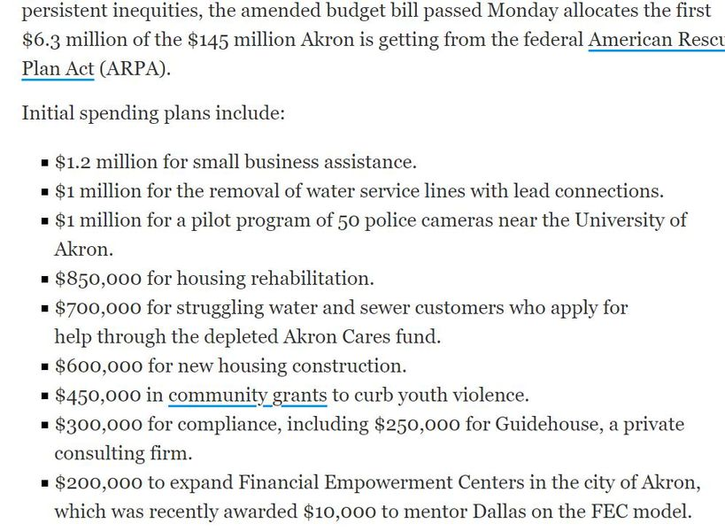

Timeline photos
Here's the start of where that once in a lifetime $145 million windfall Akron is getting from the federal government.
Of note:
50 cameras for the University of Akron. @[560734541:2048:Tara L. Mosley] still hasn't gotten the 1 CAMERA she begged for where Na'kia Crawford was gunned down. (But silly me. I forgot. She's black.)
Guidehouse who is being Dan Horrigan's brain on all this is making a quarter million.
Shammas Malik and @[1056770071:2048:Russel C Neal Jr] are shouting into the wind that city council is giving away all it's rights to oversight as @[1581792627:2048:Jeff Fusco], Horrigan's lapdog, is saying that giving away all of city council's rights to oversight is the greatest thing to ever happen to Akron.